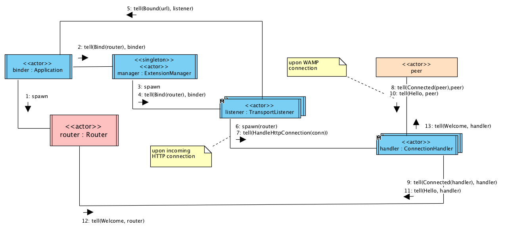

Router
Akka Wamp provides you with a basic Router that can be either launched as standalone server process or embedded into your application. It implements:
- WAMP Basic Profile,
- Broker and Dealer roles,
- JSON serialization,
- WebSocket transport
Warning
Though perfectly functional, Akka Wamp Router is intended for development purposes only. You’re advised to adopt production ready WAMP routers such as Crossbar.IOStandalone

Download the latest version, extract, configure and run it as standalone application:
- tgz
-
curl https://dl.bintray.com/angiolep/universal/akka-wamp-0.13.0.tgz tar xvfz akka-wamp-0.13.0.tar.gz cd akka-wamp-0.13.0 vim ./conf/application.conf ./bin/akka-wamp -Dakka.loglevel=DEBUG
Embedded
Create and bind an embedded router passing an actor reference factory (such as a brand new actor system or any of your actor context)
- scala
-
package examples import akka.actor.ActorSystem import akka.wamp.router.EmbeddedRouter object ScalaRouterApp extends App { val factory = ActorSystem() EmbeddedRouter.createAndBind(factory) // ... } - java
-
package examples; import akka.actor.*; import akka.wamp.router.*; public class JavaRouterApp { public static void main(String[] args) { ActorSystem system = ActorSystem.create(); EmbeddedRouter.createAndBind(system); // ... } }
Internals
A Binder actor spawns a Router actor to be bound to the Akka IO Wamp Manager. The manager spawns one ConnectionListener actor which listens for incoming connection requests. The listener spawns a new ConnectionHandler actor upon each connection establishment to serve a specific client.

Configuration
# akka.wamp.router {
# The local filesystem path the router will serve static
# web resources (such as HTML docs) out of
#
webroot = "./webroot"
# The boolean switch to validate against strict URIs
# rather than loose URIs
#
validate-strict-uris = false
# The boolean switch to NOT automatically create realms
# if they don't exist yet.
#
abort-unknown-realms = false
# The boolean switch to drop offending messages (e.g.
# not deserializable or against the protocol).
#
# By default, offending messages will cause session to be
# closed and transport to be disconnected. Set this switch on
# if you rather prefer to drop offending messages and resume.
#
drop-offending-messages = false
# Named transport configurations
#
transport {
default {
# Transport scheme can be:
#
# - tcp
# Raw TCP
# - tsl
# Transport Secure Layer
# - ws
# WebSocket
# - wss
# WebSocket over TLS
#
scheme = "ws"
# The hostname/IP-address to bind to
#
host = "127.0.0.1"
# The TCP port number (between 0 and 65536) to bind to.
# If set to 0 the first available random port number
# will be chosen
#
port = 8080
# (Only for "ws" and "wss" protocols)
# The URL file path incoming HTTP Upgrade request are expected
# to be addressed to
#
file = "wamp"
# Message format can be:
#
# - json
# JSON Javascript Object Notation
#
# - msgpack
# Message Pack
#
format = "json"
}
secure {
protocol = "wss"
port = 8443
}
raw {
protocol = "tcp"
port = 9090
format = "mgpack"
}
}